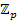

Algebra and Number
Theory Seminar
Spring 2007
Thursdays,
11:15-12:05, 106 McAllister
|
||
|
16th
January |
Please
note that Kirsten Eisentraeger (Michigan) is
speaking in the Combinatorics and Partitions
seminar. |
|
|
18th
January |
Mikhail
Ershov (University of Chicago) |
|
|
Title |
An
introduction to Golod-Shafarevich groups |
|
|
Abstract |
Informally
speaking, a finitely generated group is called Golod-Shafarevich
if it has a presentation with a ``small'' set of relators. In 1964, Golod
and Shafarevich proved that groups satisfying such
condition are necessarily infinite and used this criterion to solve two
outstanding problems: the construction of infinite finitely generated
periodic groups and the construction of infinite Hilbert class field towers. |
|
|
22nd
January |
Please
note that Chris Francisco (Missouri) is speaking in the Combinatorics
and Partitions seminar. |
|
|
25th
January |
Yuri
Zarhin (PSU) |
|
|
Abelian varieties without homotheties |
||
|
A
celebrated theorem of Bogomolov asserts that the l-adic Lie algebra attached to the Galois action on the
Tate module of an abelian variety over a number
field contains all homotheties. This is not the
case in characteristic p: a ``counterexample" is provided by an
ordinary elliptic curve defined over a finite field. In this talk we discuss
(and explicitly construct) more interesting examples of
"non-constant" absolutely simple abelian
varieties (without homotheties) over global fields
in characteristic $p$. |
||
|
30th
January |
Please
note that Mihran Papikian
(Stanford) is speaking in the Combinatorics and
Partitions seminar.
|
|
|
1st
February |
See
above. |
|
|
8th
February |
No
seminar this week. |
|
|
15th
February |
Elena
Poletaeva (University of Texas visiting IAS
Princeton) |
|
|
Superconformal algebras |
||
|
Cancelled. |
Superconformal algebras are Lie superalgebras
of vector fields of Cartan type.They
are superextensions of the Virasoro
algebra, and they have many applications in
physics. Superconformal algebras were classified by
V. Kac. |
|
|
20th
February |
Trevor
Wooley (University of Michigan): Note he is speaking
in the Combinatorics/Partitions seminar |
|
|
22nd
February |
See
above |
|
|
1st
March |
Sophie
Huczynska (University of St. Andrews) |
|
|
A
new result on generators for finite fields |
||
|
Consider
a finite field F=GF(q) and its degree n extension
E=GF(q^n). The Primitive Normal Basis Theorem
(proved in 1987) guarantees the existence of an element of E which is
simultaneously primitive and free over F; in other words, an element which is
simutaneously a multiplicative and additive
generator for the field E. Subsequently, there has been interest in the
existence of primitive free elements with various extra properties; answers
to such existence questions have combinatorial applications, as well as being
interesting in their own right. In this talk, I will discuss a framework for
answering such questions, and present a new result of this kind, the
"Strong Primitive Normal Basis Theorem". |
||
|
8th
March |
Elena
Poletaeva (University of Texas visiting IAS
Princeton)
|
|
|
Superconformal algebras |
||
|
Superconformal algebras are Lie superalgebras
of vector fields of Cartan type.They
are superextensions of the Virasoro
algebra, and they have many applications in
physics. Superconformal algebras were classified by
V. Kac. |
||
|
12-16th
March |
Spring
Break |
|
|
22nd
March |
Maosheng Xiong (University of Illinois
at Champaign-Urbana) |
|
|
Selmer
groups and Tate-Shafarevich groups for the
congruent number problem |
||
|
We
study the distribution of the sizes of the Selmer groups arising from the
three 2-isogenies and their dual 2-isogenies for the elliptic curve E_n:y^2=x^3-n^2x. We show that three of them are almost
always trivial, while the 2-rank of the other three follows a Gaussian
distribution. It implies three almost always trivial Tate-Shafarevich
groups and three large Tate-Shararevich groups.
When combined with a result obtained by Heath-Brown, we show that the mean
value of the 2-rank of the large Tate-Shafarevich
groups for square-free positive odd integers n not exceeding X is (1/2) loglog X+O(1), as X tends to
infinity. |
||
|
29th
March |
Robert
Vaughan (PSU) |
|
|
The
generating function in additive number theory for quadratic polynomials |
||
|
An
essentially best possible estimate is obtained for the additive generating
function associated with quadratic polynomials. |
||
|
5th
April |
Sinnou David (Institut de Mathématiques de Jussieu,
visiting IAS Princeton) |
|
|
Baker
Theory on group varieties |
||
|
A
long standing conjecture of Lang on rational functions on elliptic curves is
known to follow from sharp lower bounds for linear forms in elliptic
logarithms. We shall indicate how to prove such lower bounds. We shall then
indicate how these can be generalized to arbitrary commutative group
varieties. We shall also take this opportunity to survey
what has been done on this subject since the breakthrough of A. Baker. |
||
|
12th
April |
George
Andrews (PSU) |
|
|
The
number of smallest parts in the partitions of n |
||
|
There
have been variety of studies in the theory of
partitions with weighted counts of partitions. We shall provide some
relevant history. Our prime focus will be spt(n) the total number of
appearances of smallest parts in the partitions of n. For example spt(4) = 10 which can be seen by examining the partitions
of 4: 4, 3+1, 2+2, 2+1+1, 1+1+1+1. Our object will be to show that spt(n) is closely related to the second |
||
|
19th
April |
Leonid
Vaserstein (PSU) |
|
|
Bounded
reduction of invertible matrices over polynomial rings by addition
operations |
||
|
Every
r by r invertible matrix over the polynomial ring in n variables with integer coefficients
(or, more generally, with coefficients in any Euclidean ring) can be
reduced to a two by two matrix by 11n²r+17(n+1)r²
addition operations. Since this upper bound does not depend on the
matrix, it implies the Kazhdan T-property
for the group SL_r(Z[x_1,...,x_n])
for any n and any r \ge 3. We
also obtain a more general result where the coefficients are in any Noetherian ring of
finite Krull dimension. As a corollary, we
obtain that every matrix in E_rA, for any commutative finitely generated ring A
or any finitely generated algebra over any field, can be reduced to a
two by two matrix by 11n²r+17(n+1)r²
addition operations, where n is the minimal number of generators and r
\ge 3. |
||
|
26th
April |
Antun Milas (SUNY at Albany) |
|
|
Modular
forms and W-algebras |
||
|
Rational
conformal field theories can be characterized by the property that there are,
up to equivalence, finitely many |
||
|
3rd
May |
|
|
|
The
Extent to Which Subsets Are Additively Closed |
||
|
Given
a finite abelian group G (written
additively), and a subset S of G, the size r(S)
of the set may range between 0 and |S|², with the extremal values of r(S) corresponding to
sum-free subsets and subgroups of G. In this paper, we consider the
intermediate values which r(S) may take, particularly in the
setting where G is  under addition (p prime). We
obtain various bounds and results. In the setting, this work may be viewed as a subset
generalization of the Cauchy-Davenport Theorem. |
||